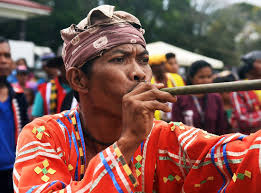

Davao’s Indigenous Roots: The Culture and Legacy of Its First Settlers
Introduction
Davao's history is deeply rooted in its indigenous past, long before Spanish colonization. The region was home to various ethnolinguistic groups, each contributing to the diverse cultural identity that still exists today. From hunter-gatherers and early traders to the establishment of Islamic settlements, the pre-colonial era of Davao is a fascinating glimpse into a thriving and self-sufficient society.
This article explores the indigenous groups of Davao, their way of life, early trade networks, cultural influences, and how these elements shaped the region’s history and traditions.
The Bagobo Tagabawa are an indigenous community in the Philippines, primarily inhabiting the slopes and foothills of Mount Apo in Davao del Sur, Mindanao. As one of the earliest settlers of Davao, they are known for their deep connection to the land, traditional abaca weaving (inabal), and vibrant Pangulabe beadwork.
Bagobo tagabawa
The Bagobo Tagabawa are an indigenous community in the Philippines, primarily inhabiting the slopes and foothills of Mount Apo in Davao del Sur, Mindanao. As one of the earliest settlers of Davao, they are known for their deep connection to the land, traditional abaca weaving (inabal), and vibrant Pangulabe beadwork.
Bagobo Obo
The Matigsalug are an indigenous Manobo sub-group in Mindanao, Philippines, known as the "people along the Salug River"(Davao River).Traditionally hunters and gatherers, they have transitioned to sedentary agriculture, growing rice and vegetables while maintaining rich cultural traditions like intricate weaving, bright-colored attire, and oral storytelling.

Matigsalug
The Blaan (also spelled B'laan) are a major non-Islamic indigenous group in Southern Mindanao, Philippines, primarily inhabiting Cotabato, South Cotabato, Sarangani, and Davao. Known for their intricate tabih (abaca) weaving, brass-making, and beadwork, they are a distinct "Lumad" group with a rich, largely preserved cultural heritage, often living near the Tboli people.
B'laan
These indigenous roots are not just relics of the past; they continue to influence modern life in Davao del Sur. Festivals, cultural villages, and tourism programs celebrate these traditions, offering visitors a glimpse into the province’s living heritage. From the vibrant attire of ceremonial dances to the serene wisdom of mountain-dwelling communities, the Lumad of Davao del Sur offer a window into a culture that is both resilient and deeply connected to its natural and spiritual environment.